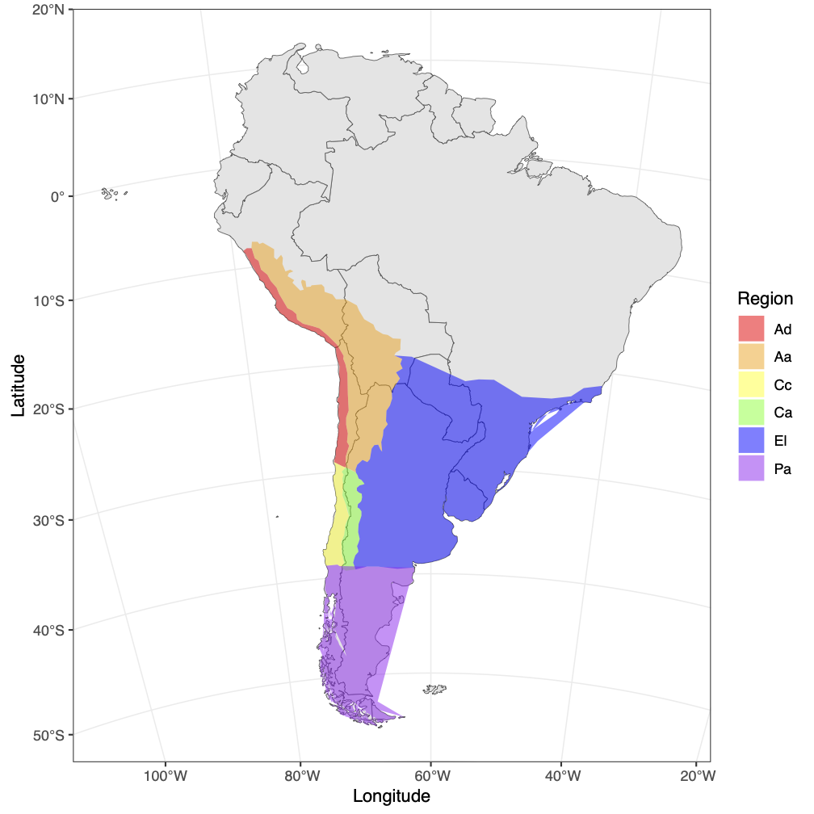
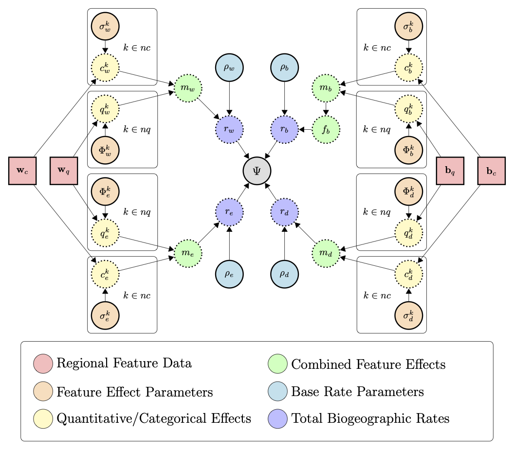
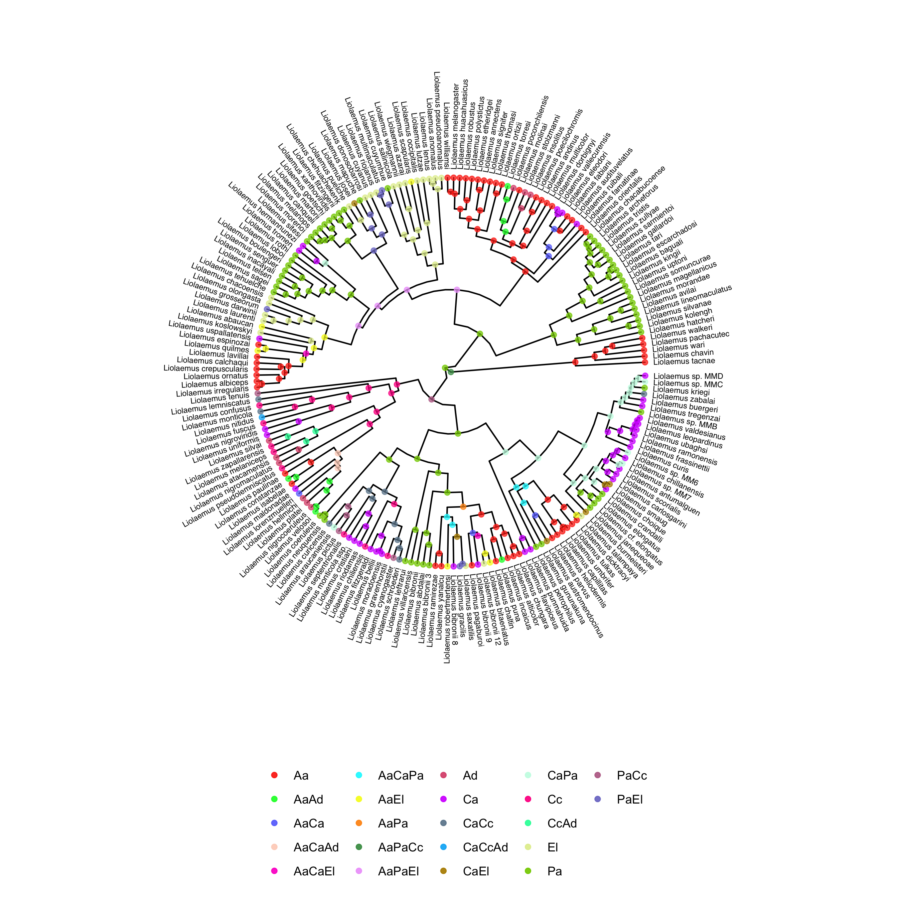
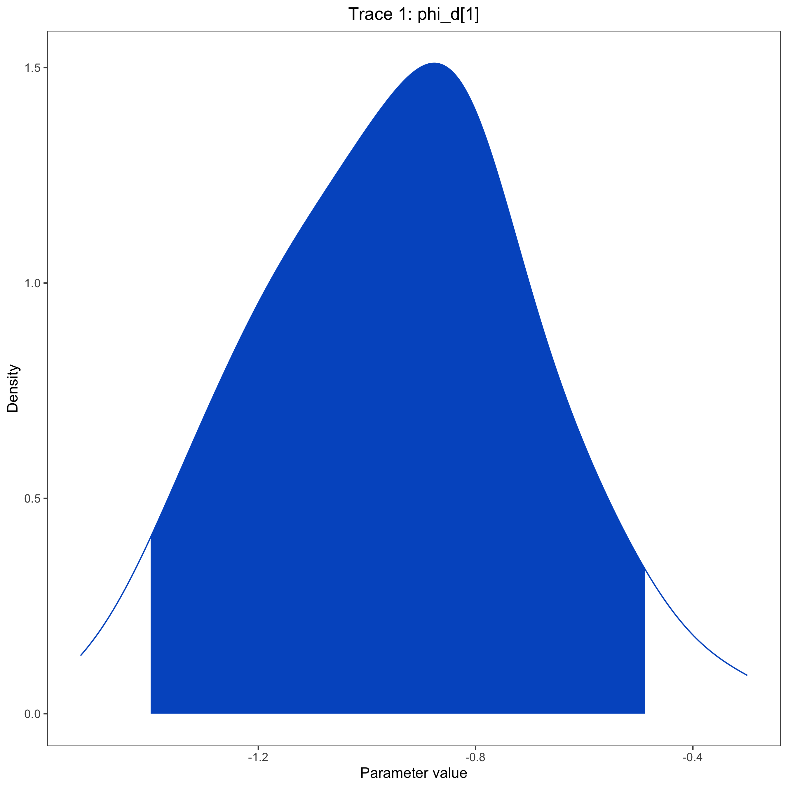

In the previous examples, we used a GeoSSE model (Goldberg et al. 2011) to investigate the evolution of the South American lizard genus Liolaemus. The GeoSSE model allows us to estimate rates of within-region speciation, extinction, between-region speciation, and dispersal that differ among regions. Biologically, we expect that these different rates are informed by features of the regions where the species are evolving. For example, we might expect that species disperse at a lower rate between more distant regions, or go extinct at a higher rate in smaller regions. The FIG model (Landis et al. 2022) and the Multiple Feature-Informed GeoSSE (MultiFIG) model (Swiston and Landis 2023) address this. Rather than giving each region its own evolutionary rate parameters, it uses functions to link features of those regions to evolutionary rates. This allows us to test hypotheses about the importance of certain environmental features on evolutionary processes. It also has the benefit of reducing the number of parameters that need to be estimated. The number of parameters in the MultiFIG model is constant with respect to the number of regions, so we can investigate systems with more regions. In this tutorial, we will model the evolution and biogeography of Liolaemus using six regions (Esquerré et al. 2019) and eight regional features.

Much like the GeoSSE model, MultiFIG uses four core processes: within-region speciation, extinction, between-region speciation, and dispersal. However, instead of assigning each region or region pair its own rate for each process, MultiFIG uses regional feature data and a series of strength parameters and functions to construct rates.

The FIG model incorporates geographical features with two value types as model variables: quantitative features and categorical features. Quantitative features have continuous real values while categorical features have discrete values. MultiFIG also separates data by dimensionality type, incorporating one-dimensional within-region data and two-dimensional between-region data. We use four containers to store this data: $w_c$, $w_q$, $b_c$, and $b_q$.
Each regional feature is assigned a “feature effect” parameter that measures the strength and direction of the effect of a particular feature on a particular process. Note that “effect” refers to a mathematical relationship here, but does not indicate causality. These strength parameters are referred to as $\sigma$ and $\phi$, representing the effects of categorical and quantitative features respectively. There is one $\sigma$ or $\phi$ parameter per feature per process. For example, $\phi_w^{Altitude}$ would represent the relationship between region altitude and within-region speciation.
For each process, the categorical and quantitative feature effects (with feature data modified by strength parameters) are gathered into $c$ and $q$ vectors, then ultimately combined into an $m$ vector. The $m$ vector represents the total effects of all regional features on a particular process, with entries representing each region (or region pair for between-region processes). The $m$ vector represents relative rates among regions, but to obtain absolute rates, the $m$ vector for each process is multiplied by a process-specific base rate parameter $\rho$. This constructs the $r$ vectors that are analogous to GeoSSE rates: $r_w$ for within-region speciation rates, $r_e$ for extinction rates, and $r_d$ for dispersal rates (calculating $r_b$ for between-region speciation rates also requires the use of a range split score, as in (Landis et al. 2022)). This tutorial will not describe the details of these intermediate functions, but they can be found in (Swiston and Landis 2023).
In this analysis, we are examining 8 regional features. 4 are quantitative: area, mean altitude, distance, and difference in mean altitude. The other 4 are categorical: size, height, adjacency, and height sameness. While the categorical features are closely related to the quantitative features in this analysis, this is not a requirement of the model. Because each within-region feature acts on 2 processes and each between-region feature acts on 2 processes, this creates a total of 16 parameters. Adding one $\rho$ parameter for each process results in a total of 20 model parameters to be estimated. We will use a time-calibrated phylogeny and present-day ranges for Liolaemus to estimate these parameters, and use those estimates to determine which regional features are most strongly related to particular processes.
Important version info!!
This tutorial is the one of a series of lessons explaining how to build increasingly powerful but computationally demanding GeoSSE-type models for biogeographic analyses. Inference under these models is powered by the Tensorphylo plugin for RevBayes, located here: bitbucket.org/mrmay/tensorphylo/src/master (May and Meyer). This tutorial, and following tutorials for GeoSSE-type models, will also require a development version of RevBayes built from the
hawaii_fixbranch (this message will be removed when the branch is merged). As an alternative to building the development version of RevBayes and installing Tensorphylo, you can instead use the RevBayes Docker image, which comes pre-configured with Tensorphylo enabled. The RevBayes Docker tutorial is located here: revbayes.github.io/tutorials/docker.
Running a MultiFIG analysis in RevBayes requires several important data files, including a file representing the time-calibrated phylogeny and a biogeographic data matrix describing the ranges for each species. tree.mcc.tre is a time-calibrated phylogeny of Liolaemus. full_ranges.nex assigns ranges to each species for a six-region system: Altiplanic Andes, Central Andes, Patagonia, Central Chile, Atacama Desert, and Eastern Lowlands. For each species (row) and region (column), the file reports if the species is present (1) or absent (0) in that region. There are also feature files that contain regional feature data, and a feature_summary.csv file that describes all the regional feature files (where they are found and what kind of data they contain).
If you prefer to run a single script instead of entering each command manually, the RevBayes script called multifig.Rev contains all of the commands that are used in the tutorial. There is also an R script for plotting the analysis results. The data and script can be found in the Data files and scripts box in the left sidebar of the tutorial page. Somewhere on your computer, you should create a directory (folder) for this tutorial. Inside the tutorial directory, you should create a scripts directory. This is the directory where you will run RevBayes commands, or where you will put the multifig.Rev and multifig.R scripts. Then, you should create a data directory inside the tutorial directory. The scripts/commands for the tutorial expect that the primary data files (tree.mcc.tre, full_ranges.nex, and feature_summary.csv) will be in this directory, while the feature files (the data, not the summary file) will be in a subdirectory called features. However, you can always modify the filepaths to locate the data wherever you choose to download it.
After starting up RevBayes from within your local scripts directory, you can load the TensorPhylo plugin. You will need to know where you downloaded the plugin. For example, if you cloned the TensorPhylo directory into your home directory at ~/tensorphylo, you would use the following command to load the plugin:
loadPlugin("TensorPhylo", "~/tensorphylo/build/installer/lib")
Note that if you’re using the RevBayes Docker image, then the Tensorphylo plugin is installed in the / (root) directory:
loadPlugin("TensorPhylo", "/tensorphylo/build/installer/lib")
It is also a good idea to set a seed. If you want to exactly replicate the results of the tutorial, you should use the seed 1.
seed(1)
We also want to tell RevBayes where to find our data (and where to save our output later). If you have set up your tutorial directory in a different way than suggested, you will need to modify the filepaths.
fp = "../"
dat_fp = fp + "data/"
out_fp = fp + "output/"
bg_fn = dat_fp + "full_ranges.nex"
phy_fn = dat_fp + "tree.mcc.tre"
feature_fn = dat_fp + "feature_summary.csv"
Next, we will read in the data. Let’s start with the phylogenetic tree.
phy <- readTrees(phy_fn)[1]
In order to set up our analysis, we will want to know some information about this tree: the root age, the taxa, and the number of taxa.
tree_height <- phy.rootAge()
taxa = phy.taxa()
num_taxa = taxa.size()
We also want to read in the range data.
bg_01 = readDiscreteCharacterData(bg_fn)
We want to get some information about this range data: how many regions there are, how many ranges can be constructed from these regions, and how many region pairs there are.
num_regions = bg_01.nchar()
num_ranges = abs(2^num_regions - 1)
num_pairs = num_regions^2 - num_regions
We want to format the range data to be used in a GeoSSE-type analysis. This will take the binary range data and output integer states.
bg_dat = formatDiscreteCharacterData(bg_01, format="GeoSSE", numStates=num_ranges)
We also want to get our feature data. Using the RevBayes function readRegionalFeatures, we can look at the feature_summary.csv file and automatically look for feature data. The feature_summary.csv file is specially formated to be read by RevBayes, consisting of 5 columns. The first column is time_index. More advanced analyses, like TimeFIG, may involve time-heterogenous region features, in which case we would need to index our feature data by time slices. However, in this analysis, we are only using present-day data, so all of our features will have a time_index of 1. The second column is feature_index. Each feature type (within-region categorical, within-region quantitative, between-region categorical, and between-region quantitative) has a container that can contain several features, so we want to index the features within those containers. For example, in this analysis, each container has two features, indexed 1 and 2. Keep in mind that Feature 1 in one container does not have to be related to Feature 1 in another container. It’s important to keep track of these indices so you know which output corresponds to which feature. For this analysis, we’ve listed the features in order on the feature table – for example, Quantitative Between-Region Feature 1 is Mean Distance Between Points (km). The third column is feature_relationship. This column is for indicating whether the feature is a within-region feature or a between-region feature, with options ‘within’ or ‘between’. The fourth column is feature_type, for indicating whether the feature is quantitative of categorical. Finally, the fifth column is feature_path, which gives a filepath for the actual file containing the data for that feature.
geo_features <- readRegionalFeatures(feature_fn, delimiter=",",nonexistent_region_token="nan")
Next, we transform the feature data into feature layers, a RevBayes object that we will use later for informing our biogeographic rates. First, we normalize the features (important for scaling reasons). Then we pull each feature type out of our geo_features object. Finally, we create the layers.
geo_features.normalize("within")
geo_features.normalize("between")
feature_CW <- geo_features.get("within","categorical",1)
feature_QW <- geo_features.get("within","quantitative",1)
feature_CB <- geo_features.get("between","categorical",1)
feature_QB <- geo_features.get("between","quantitative",1)
for (i in 1:feature_CW.size()) {layer_CW[i] <- feature_CW[i].get()}
for (i in 1:feature_QW.size()) {layer_QW[i] <- feature_QW[i].get()}
for (i in 1:feature_CB.size()) {layer_CB[i] <- feature_CB[i].get()}
for (i in 1:feature_QB.size()) {layer_QB[i] <- feature_QB[i].get()}
In the MultiFIG model, there are four processes: within-region speciation, extinction, between-region speciation, and dispersal. Rates per region or region pair are calculated using feature data, feature effect parameters, and base rate parameters. We will set the prior on base rate parameters to the exponential distribution dnExp(1). We will set the prior on feature effect parameters to the normal distribution dnNormal(0,1). Then we will use the RevBayes function fnFeatureInformedRates to combine the feature data and feature effect parameters to create $m$ vectors/matrices, representing relative rates per region or region pair. Finally, we will multiply $m$ by the base rate parameter to get model rates $r_w$, $r_e$, $r_b$, and $r_d$.
Let’s start by creating distributions that we will use for all $\rho$, $\phi$, and $\sigma$ parameters.
sigma_dist = dnNormal(0,1)
phi_dist = dnNormal(0,1)
rho_dist = dnExp(1)
Now we will set up our rates for the four core processes. We will set up within-region speciation rates first. We won’t worry about multiplying $m_w$ by the base rate yet, because the fnBiogeographyCladoEventsBD function will do this later.
rho_w ~ rho_dist
for (i in 1:feature_CW.size()) sigma_w[i] ~ sigma_dist
for (i in 1:feature_QW.size()) phi_w[i] ~ phi_dist
m_w := fnFeatureInformedRates(layer_CW, layer_QW, sigma_w, phi_w, null_rate=0)
Extinction rates are set up similarly, and we will incorporate $\rho$ this time. From these extinction rates (which are actually single-region extinction rates), we will set up global extinction rates for each possible range in the state space. In the MultiFIG model, lineage-level extincion events occur when a species goes globally extinct (i.e. it loses the last region from its range). Therefore, we will assign all multi-region ranges an extinction rate of 0, and we will assign all single-region ranges an extinction rate equal to the local extirpation rate. Note, ranges are numbered such that indices 1, 2, through num_regions correspond to ranges that respectively contain only region 1, region 2, up through the last region in the system.
rho_e ~ rho_dist
for (i in 1:feature_CW.size()) sigma_e[i] ~ sigma_dist
for (i in 1:feature_QW.size()) phi_e[i] ~ phi_dist
m_e := fnFeatureInformedRates(layer_CW, layer_QW, sigma_e, phi_e, null_rate=1e3)
r_e := rho_e * m_e[1]
for (i in 1:num_ranges) {
mu[i] <- abs(0)
if (i <= num_regions) {
mu[i] := r_e[i]
}
}
Between-region speciation rates are set up similarly. Again, we do not need to incorporate $\rho$ yet. We also don’t have to worry about incorporating range split score; RevBayes will do this automatically when we create the cladogenetic probability matrix.
rho_b ~ rho_dist
for (i in 1:feature_CB.size()) sigma_b[i] ~ sigma_dist
for (i in 1:feature_QB.size()) phi_b[i] ~ phi_dist
m_b := fnFeatureInformedRates(layer_CB, layer_QB, sigma_b, phi_b, null_rate=1)
Finally, for dispersal rates, we will set up dispersal rates.
rho_d ~ rho_dist
for (i in 1:feature_CB.size()) sigma_d[i] ~ sigma_dist
for (i in 1:feature_QB.size()) phi_d[i] ~ phi_dist
m_d := fnFeatureInformedRates(layer_CB, layer_QB, sigma_d, phi_d, null_rate=0)
for (i in 1:num_regions) {r_d[i] := rho_d * m_d[i]}
From these rates, we can use RevBayes functions to construct the rate matrices used by the analysis. The first is an anagenetic rate matrix, which gives rates of anagenetic processes. We are not restricting the number of regions that a species can live in at any given time, so we set the maxRangeSize equal to the number of regions. Settings maxRangeSize may be used to reduce the number of range patterns in the model, particularly when num_regions is large.
Q_bg := fnBiogeographyRateMatrix(
dispersalRates=r_d,
extirpationRates=r_e,
maxRangeSize=num_regions)
We also construct a cladogenetic event matrix, describing the absolute rates of different cladogenetic events. We are not restricting the sizes of ‘split’ subranges following between-region speciation, so we set the max_subrange_split_size equal to the number of regions. From this matrix, we can obtain the total speciation rates per state, as well as a cladogenetic probability matrix.
clado_map := fnBiogeographyCladoEventsBD(
speciation_rates=[ rho_w, rho_b ],
within_region_features=m_w[1],
between_region_features=m_b,
max_range_size=num_regions,
max_subrange_split_size=num_regions)
lambda := clado_map.getSpeciationRateSumPerState()
omega := clado_map.getCladogeneticProbabilityMatrix()
Lastly, we need to assign a probability distribution to range of the most recent common ancestor of all species, prior to the first speciation event. In this analysis, we will assume all ranges were equally likely for that ancestor.
pi_base <- rep(1,num_ranges)
pi <- simplex(pi_base)
With all of the rates constructed, we can create a stochastic variable drawn from this MultiFIG model with state-dependent birth, death, and speciation processes. This establishes how the various processes interact to generate a tree with a topology, divergence times, and terminal taxon states (ranges). Then we can clamp the variable with the fixed tree and present-day range states, allowing us to infer model parameters based on our observed data.
timetree ~ dnGLHBDSP(
rootAge = tree_height,
lambda = lambda,
mu = mu,
eta = Q_bg,
omega = omega,
pi = pi,
rho = 1,
condition = "time",
taxa = taxa,
nStates = num_ranges,
nProc = 4)
timetree.clamp(phy)
timetree.clampCharData(bg_dat)
For this analysis, we will perform a short MCMC of 1000 generations, with 100 generations of hyperparameter-tuning burnin. An analysis of this length may not achieve convergence, so these settings should only be used for testing purposes. You can alter this MCMC by changing the number of iterations, the length of the burnin period, or the move schedule. We will also set up the MCMC to record every 10 iterations.
n_gen = 1000
n_burn = n_gen/10
printgen = 10
We want MCMC to update all of the base rate $\rho$ parameters, as well as the $\sigma$ and $\phi$ parameters. We will use a scaling move for the base rates, since they should always have positive values. These moves will each be performed once per iteration. We will use a sliding move for the feature effect parameters, since they can have positive or negative values. These moves will also be performed once per iteration.
mvi = 1
mv[mvi++] = mvScale(rho_w, weight=1)
mv[mvi++] = mvScale(rho_e, weight=1)
mv[mvi++] = mvScale(rho_b, weight=1)
mv[mvi++] = mvScale(rho_d, weight=1)
for (i in 1:sigma_d.size()) {mv[mvi++] = mvSlide(sigma_d[i])}
for (i in 1:sigma_b.size()) {mv[mvi++] = mvSlide(sigma_b[i])}
for (i in 1:sigma_e.size()) {mv[mvi++] = mvSlide(sigma_e[i])}
for (i in 1:sigma_w.size()) {mv[mvi++] = mvSlide(sigma_w[i])}
for (i in 1:phi_d.size()) {mv[mvi++] = mvSlide(phi_d[i])}
for (i in 1:phi_b.size()) {mv[mvi++] = mvSlide(phi_b[i])}
for (i in 1:phi_e.size()) {mv[mvi++] = mvSlide(phi_e[i])}
for (i in 1:phi_w.size()) {mv[mvi++] = mvSlide(phi_w[i])}
We also want MCMC to keep track of certain things while it runs. We want it to print some output to the screen so we can see how it is running (mnScreen). We also want it to save model parameters to a file (mnModel). Finally, if we want to use the output for ancestral state reconstruction, we want to save states and stochastic character mappings (mnJointConditionalAncestralStates and mnStochasticCharacterMap). All of the output files will be saved in the output directory so that it can be accessed later.
mni = 1
mn[mni++] = mnScreen(printgen=printgen)
mn[mni++] = mnModel(printgen=printgen, filename=out_fp+"model.log")
mn[mni++] = mnJointConditionalAncestralState(glhbdsp=timetree, tree=timetree, printgen=printgen, filename=out_fp+"states.log", withTips=true, withStartStates=true, type="NaturalNumbers")
mn[mni++] = mnStochasticCharacterMap(glhbdsp=timetree, printgen=printgen, filename=out_fp+"stoch.log")
Then we can start up the MCMC. It doesn’t matter which model parameter you use to initialize the model, so we will use m_w. RevBayes will find all the other parameters that are connected to m_w and include them in the model as well. Then we create an MCMC object with the moves, monitors, and model, add burnin, and run the MCMC.
mdl = model(m_w)
ch = mcmc(mv, mn, mdl)
ch.burnin(n_burn, tuningInterval=10)
ch.run(n_gen)
After the MCMC analysis has concluded, we can summarize the ancestral states we obtained, creating an ancestral state tree. This tree will be written to the file ase.tre . It may take a little while.
f_burn = 0.2
x_stoch = readAncestralStateTrace(file=out_fp+"stoch.log")
x_states = readAncestralStateTrace(file=out_fp+"states.log")
summarizeCharacterMaps(x_stoch,timetree,file=out_fp+"events.tsv",burnin=f_burn)
state_tree = ancestralStateTree(
tree=timetree,
ancestral_state_trace_vector=x_states,
include_start_states=true,
file=out_fp+"ase.tre",
summary_statistic="MAP",
reconstruction="marginal",
burnin=f_burn,
nStates=3,
site=1)
writeNexus(state_tree,filename=out_fp+"ase.tre")
One interesting thing we can do with the output of the MultiFIG analysis is plot ancestral states. This can be done using RevGadgets, an R packages that processes RevBayes output. You can use R to generate a tree with ancestral states by running the multifig.R script, or by executing the following code in R. Before plotting the ancestral state tree, we create two vectors. The vector labels is useful because it maps actual region labels onto state numbers, so the legend can be easily interpreted. If you used your own data, you would have to provide your own state labels. The vector colors is necessary in this case because RevGadgets does not automatically generate color schemes with more than 12 colors, and there are more than 12 states on the reconstructed tree. If you use your own data, you may need more colors or fewer colors (the colors vector is allowed to have more colors than states).
labels <- c("0" = "Aa","1" = "Ca","2" = "Pa","3" = "Cc","4" = "Ad","5" = "El","6" = "AaCa","7" = "AaPa","8" = "CaPa","9" = "AaCc","10" = "CaCc","11" = "PaCc","12" = "AaAd","13" = "CaAd","14" = "PaAd","15" = "CcAd","16" = "AaEl","17" = "CaEl","18" = "PaEl","19" = "CcEl","20" = "AdEl","21" = "AaCaPa","22" = "AaCaCc","23" = "AaPaCc","24" = "CaPaCc","25" = "AaCaAd","26" = "AaPaAd","27" = "CaPaAd","28" = "AaCcAd","29" = "CaCcAd","30" = "PaCcAd","31" = "AaCaEl","32" = "AaPaEl","33" = "CaPaEl","34" = "AaCcEl","35" = "CaCcEl","36" = "PaCcEl","37" = "AaAdEl","38" = "CaAdEl","39" = "PaAdEl","40" = "CcAdEl","41" = "AaCaPaCc","42" = "AaCaPaAd","43" = "AaCaCcAd","44" = "AaPaCcAd","45" = "CaPaCcAd","46" = "AaCaPaEl","47" = "AaCaCcEl","48" = "AaPaCcEl","49" = "CaPaCcEl","50" = "AaCaAdEl","51" = "AaPaAdEl","52" = "CaPaAdEl","53" = "AaCcAdEl","54" = "CaCcAdEl","55" = "PaCcAdEl","56" = "AaCaPaCcAd","57" = "AaCaPaCcEl","58" = "AaCaPaAdEl","59" = "AaCaCcAdEl","60" = "AaPaCcAdEl","61" = "CaPaCcAdEl","62" = "AaCaPaCcAdEl")
colors <- c("#FD3216", "#00FE35", "#6A76FC", "#FED4C4", "#FE00CE", "#0DF9FF", "#F6F926", "#FF9616", "#479B55", "#EEA6FB", "#DC587D", "#D626FF", "#6E899C", "#00B5F7", "#B68E00", "#C9FBE5", "#FF0092", "#22FFA7", "#E3EE9E", "#86CE00", "#BC7196", "#7E7DCD", "#FC6955", "#E48F72")
library(RevGadgets)
library(ggplot2)
tree_file = "../output/ase.tre"
output_file = "../output/states.png"
states <- processAncStates(tree_file, state_labels=labels)
plotAncStatesMAP(t=states,
tree_layout="circular",
node_size=1.5,
node_color_as="state",
node_color=colors,
node_size_as=NULL) +
ggplot2::theme(legend.position="bottom",
legend.title=element_blank())
ggsave(output_file, width = 9, height = 9)

You can also examine the output files, like model.log, to assess the relationships between regional features and biogeographic processes, or to compare relative rates of different event types. This can also be done using RevGadgets. Here, we show a posterior plot for a single parameter ($\phi_d^{Distance}$) as an example.
trace <- readTrace(path=log_file)
plotTrace(trace, vars=c("phi_d[1]"))
ggsave(posterior_file, width = 9, height = 9)
